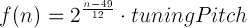
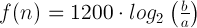

The tuner needs to have the the ability to convert between frequencies and their note names.
Tuner.frequencyUtils = do ->The following formula is used to create the actual frequencies that are mapped to the notes:

Where 49 is the index of the standard reference pitch (the A above middle
C), and n is the pitch number relative to that.
createFrequencies = do ->
PITCH_NAMES = ["C", "C#", "D", "D#", "E", "F", "F#", "G", "G#", "A", "A#", "B"]
OCTAVES = [1, 2, 3, 4, 5, 6, 7]A default tuning pitch of 440Hz is used to generate pitches in A440 (Modern
standard concert pitch). To start at C1, the note index starts at 4.
(reference = Tuner.Constants.REFERENCE_PITCH) ->
freqs = {}
note = 4
OCTAVES.forEach (octave) ->
PITCH_NAMES.forEach (pitch) ->
pitchName = pitch + octave
freqs[pitchName] = Math.pow(2, (note++ - 49) / 12) * reference
freqsThe getPitch function takes the current estimated frequency and finds the
closest pitch to that frequency. It also returns the difference between the
current frequency to the in-tune pitch of the note. This difference is used to
find the number of cents - 1/100ths of a semi-tone - that a note
is out of tune by, using the following formula:

getPitch = (freq, minDiff = Infinity) ->
for own key, val of Tuner.frequencies
if Math.abs(freq - val) < minDiff
minDiff = Math.abs(freq - val)
diff = freq - val
rat = freq / val
note = key
cents = 1200 * (Math.log(freq / Tuner.frequencies[note]) / Math.LN2)
[note, cents]
{ createFrequencies, getPitch }Initially, the set of standard pitches for the default of A440Hz tuning is
created and assigned to the frequencies object.
Tuner.frequencies = Tuner.frequencyUtils.createFrequencies()